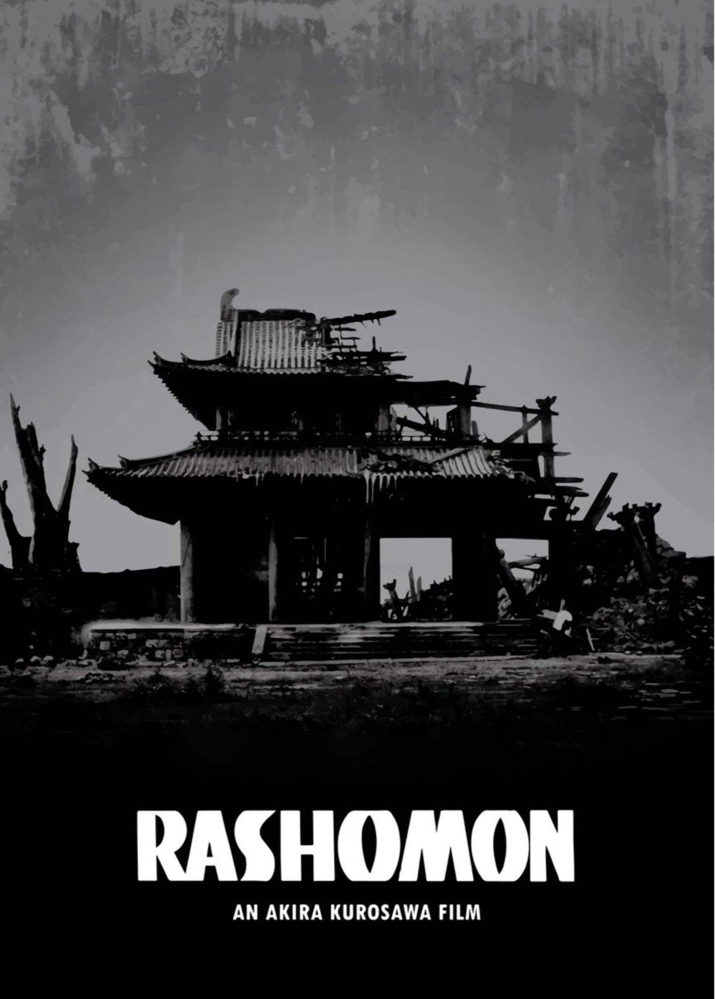

Tác phẩm chính

- La Sinh Môn (1915)
- Viết về sự suy đồi đạo đức của những con người vốn lương thiện trong xã hội rối ren, tác phẩm đã gây cho ông tiếng vang lớn, được nhà văn Natsume Soseki hết sức ca ngợi.
- Trong rừng trúc (1922)
- Tác phẩm vận dụng thành công người kể chuyện không đáng tin để kể lại một vụ án mạng không rõ thủ phạm. Về sau, bộ phim La Sinh Môn lấy phần lớn diễn biến của tác phẩm làm kịch bản nhưng kết hợp với bối cảnh của tác phẩm La Sinh Môn.
- Cuộc đời một kẻ ngốc (1927)
- Được ông viết trong những năm cuối đời, tác phẩm là một tiểu tự truyện đầy đau thương, phơi bày nội tâm của tác giả trong quãng thời gian đó.
- Kappa (1927)
- Kappa là một tiểu thuyết trào phúng phê phán tính bầy đàn của xã hội đương thời và chính sách kiểm duyệt mà xã hội này thực thi thông qua loài thủy nhân không có thật kappa.